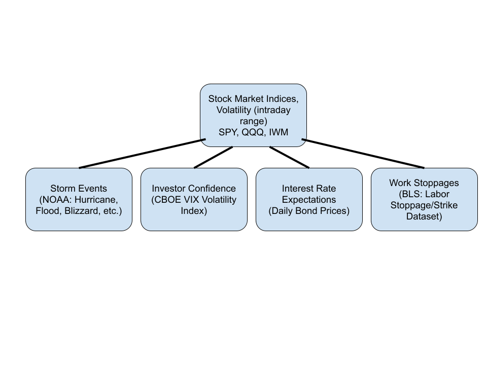

Introduction
Topic Explanation:
For this project the time series I will be studying are major stock market indices, specifically the S&P 500, the Russel 2000, and the Nasdaq 100 (QQQ). The purpose of this project is to understand the factors driving the price of these indices, looking at climate events such as wildfires and hurricanes, investor confidence, macroeconomic data, and the impacts of COVID-19. I will use the statistical models we learn in class to investigate the relationships of these factors on stock market prices.
The Big Picture:
Financial markets are directly important to the well-being of everyday Americans. While the stock market is often seen as exclusive to a small circle of elite investors, in reality millions of Americans have exposure to the markets through retirement funds, which are made up of many different kinds of investments. If we can become better at predicting the course of financial markets, particularly in relation to external forces like climate change, it could promise to reduce volatility and inefficiency in the market. In turn, this would help everyday people build up their savings to enjoy a better quality of life, retire sooner, or have more security.
Further, understanding the movements of financial markets is important in controlling sentiment. In cases like the onset of the COVID-19 pandemic, stock market crashes could snowball into businesses cutting more jobs than needed, which would again directly impact everyday peoples’ livelihoods. With the hope of understanding these phenomena better, this project will look directly at investor sentiment and the impact of COVID-19.

Analytical Angles:
First, looking at stock prices as individual univariate time series. Conceptually, we are studying any intrinsic characteristics or patterns that publicly-traded stocks might have. This focuses on the properties of stocks themselves, and not how they react to external stimuli. Second, understanding stock prices as objects which are reflective of individuals actions and preferences. In this case, the individuals in question are investors, and we will look at investor sentiment and see how it might affect prices in financial markets. Third, viewing changes in stock prices in the context of external stimuli. From this analytical perspective, the stock market is a closed system, which is disrupted by external forces from time-to-time that cause unexpected behaviour. Studying the impact of climate events and economic data releasing will pertain to this point. Fourth, using stocks at output variables, which are a tool to investigate the impact of serious events like COVID-19. In this case, we are interested in looking at how the onset of COVID rippled through the stock market, and what we could learn from stock prices to help ameliorate similar disasters in the future.
Literature Review:
Many of the factors this project seeks to investigate have previously been reviewed by academics. For instance, the consequence of investor sentiment on the stock market has been widely studied, in terms of how it impacts stock market crises (Zouaoui, Nouyrigat, and Beer 2011), trading volume (So and Lei 2015), and especially returns (Smales 2017). Further, authors have previously found an impact of climate events, such as hurricanes (Liu, Ferreira, and Karali 2021) on stock prices of particular companies. The fact that these issues have been studied previously is encouraging, because in each case the authors chose a specific group of time and company limited stock market data. This project might extend their results to other stock market datasets, and might hope to incorporate these relationships into new statistical models
Guiding Questions:
- How do markets react in anticipation of the release of macroeconomic data?
- How do markets react when their predictions about macroeconomic data are more or less accurate?
- How does investor confidence impact markets?
- Can time series data from financial markets tell us anything about future levels of investor confidence?
- How does the stock market react to the increasing prevalence of climate events such as hurricanes, wildfires?
- Which securities are most impacted by climate events?
- How has COVID changed stock prices in the months and years after the onset of the pandemic?
- Can we predict the impact of future black swan events on the stock market by looking at COVID’s example?
- How do the prices of different securities impact eachother?
- How have the relationships between the prices of securities changed over time?